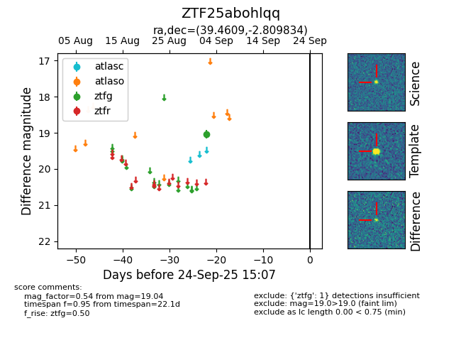

FINK: ZTF25abohlqq
Lasair: ZTF25abohlqq
ALeRCE: ZTF25abohlqq
ZTF25abohlqq (ztf,fink)
equatorial (ra, dec) = (39.4609,-2.80983)
galactic (l, b) = (173.8218,-54.80275)

last ztfg=19.04
1 ztfg detections